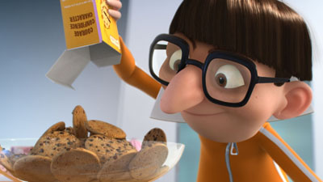
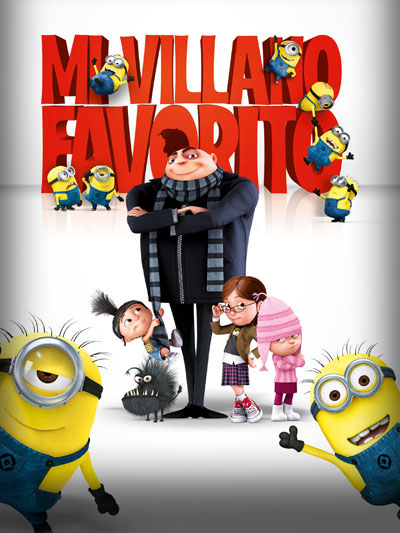

Vector cuyo nombre real es Víctor, es el primer antagonista dentro de la franquicia de Mi villano Favorito.
A pesar de ser un genio en cuanto a mecánica, estrategia e inventiva, Vector es socialmente torpe y travieso. Es arrogante y jactancioso, y a menudo se toma el tiempo para felicitarse y deleitarse con sus logros. Vector también puede ser bastante engañoso, ya que posterga la devolución segura de las Niñas cuando Gru simplemente entrega la luna como prometió.
Cuando Felonious Gru se encuentra por primera vez con Vector en el Banco del Mal, no parece el tipo de persona que sería lo suficientemente competente como para robar un cono de helado, y mucho menos la Gran Pirámide de Giza, ya que sus alardes solo irritan, y su último invento, el cañón Piraña, fracasa. Incluso cuando el gerente del banco, el Sr. Perkins, lo confirma, Gru solo reacciona con incredulidad y planea robar la luna para reparar su orgullo roto. Sin embargo, con las herramientas adecuadas, Vector demuestra ser una amenaza importante para sus propios planes de robar la luna.
Despicable Me (titulada Mi villano favorito en Hispanoamérica y Gru: mi villano favorito en España) es una película cómica de animación producida por Illumination (la primera del estudio) y distribuida por Universal Pictures. Fue dirigida por Pierre Coffin y Chris Renaud, con una historia de Sergio Pablos, estrenada en Estados Unidos el 9 de julio de 2010.
La película comienza en Egipto, junto a la gran pirámide de Guiza, donde se detiene un autobús lleno de turistas estadounidenses. Mientras toman fotografías, un niño se escapa del cuidado de sus padres y cae accidentalmente sobre la pirámide. Inesperadamente, rebota sobre ella. Así se descubre que la estructura original ha sido robada y sustituida por un doble inflable.
La película Mi villano favorito (2010) comienza con la presentación de Gru, un supervillano que vive en secreto en un suburbio. Gru tiene un ejército de Minions, unos humanoides con forma de pastilla amarilla.
